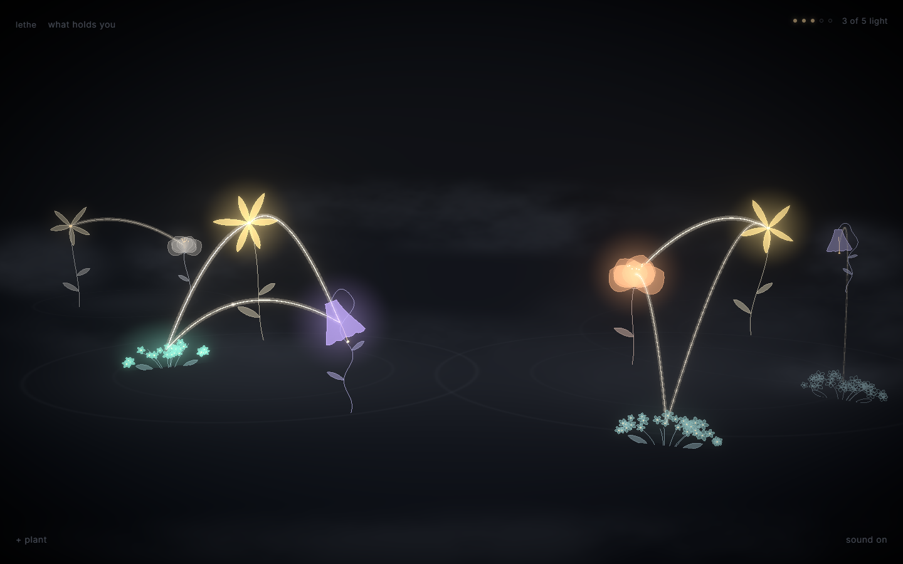
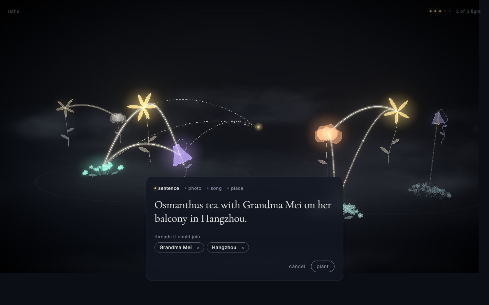
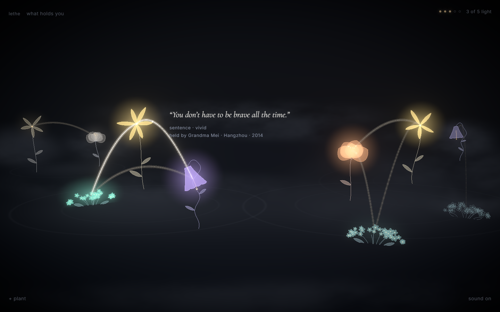
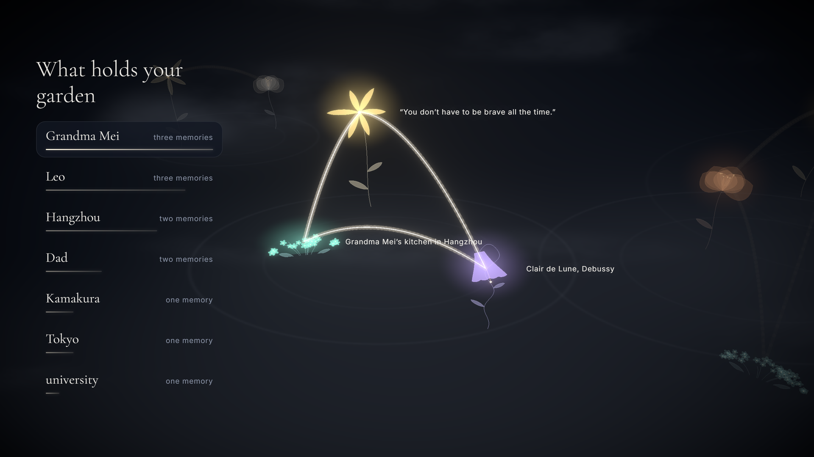
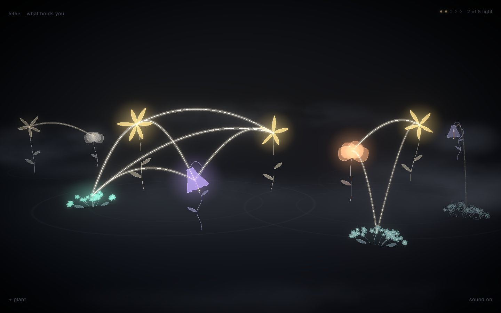
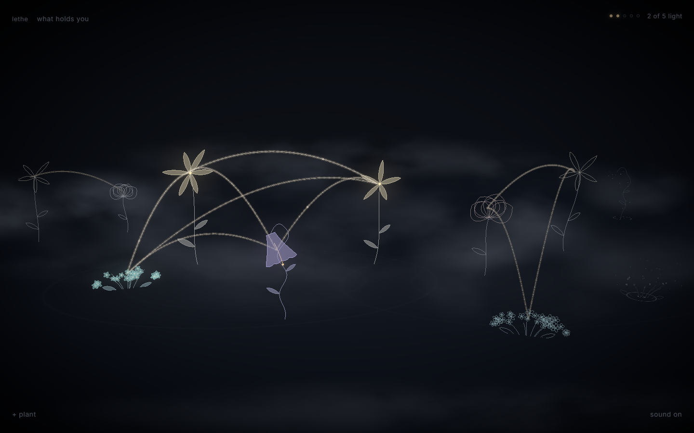
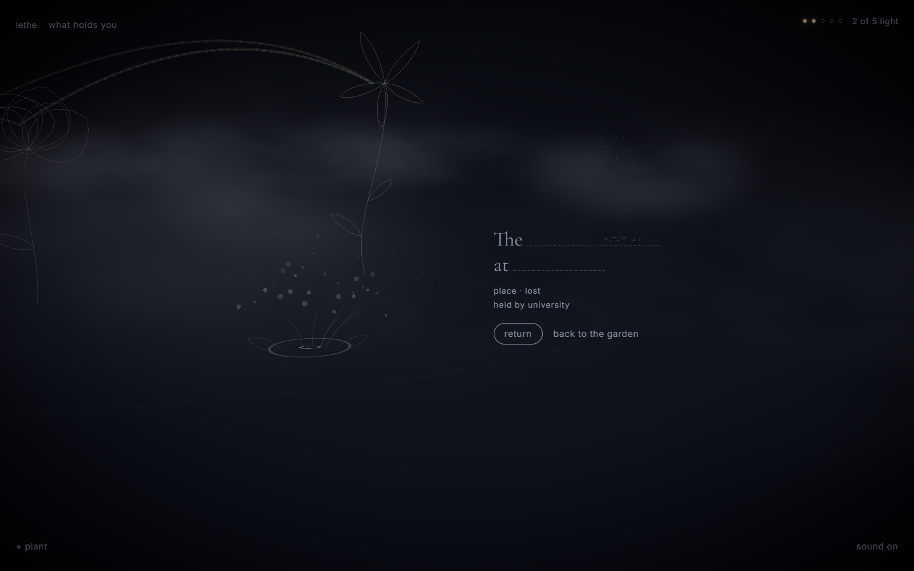

your life as a world
lethe
a life becomes a garden
what would you choose to keep in bloom?
a moment for the room
hold one memory
in your mind
you can keep it to yourself.
what kind of fragment is it?
someone’s voice. a familiar room. one ordinary moment.

a memory becomes a place
a fragment
takes root
the words become a flower.
its connections become part of the world.
a waiting seed, with the threads it could join

one fictional life
her words
“You don’t have to be brave all the time.”
grandma mei’s kitchen.
the music she played.
different moments, one person.

relationships become visible
what the fragments share
her words, her kitchen, and her music share grandma mei
a choice for the audience
one light.
where would you place it?
raise a hand for the memory you would tend.
both choices belong to the same life.
we’ll take your choice into the living garden.

the audience’s choice, in the game
the living garden
choose what to tend.
plant a fragment. let a season pass.
the live game uses its real rules. the recorded route is a fallback.

attention has consequences
a season passes
some moments keep their color.
others settle into dusk.

a pause, rather than a verdict
a seed remains
the words remain.
we can return to them.
for now, this space is quiet.
let this moment breathe
the world becomes a portrait
what holds
this life
people and places emerge
from the memories that remain.
grandma mei
leo
hangzhou
beyond the fictional garden
a world you can
make your own
plant your own memories and discover their connections.
each flower grows from a stable identity
shared people and places create relationships
your personal garden lives in this browser
planting works with local tagging. an optional provider can receive memory text and known entity names to improve suggestions.
return to the memory you imagined
you cannot keep every
moment in bloom
what you tend gives the garden its shape
what would your garden carry?
if this stayed with you, i would appreciate your vote.
lethe-nine.vercel.app